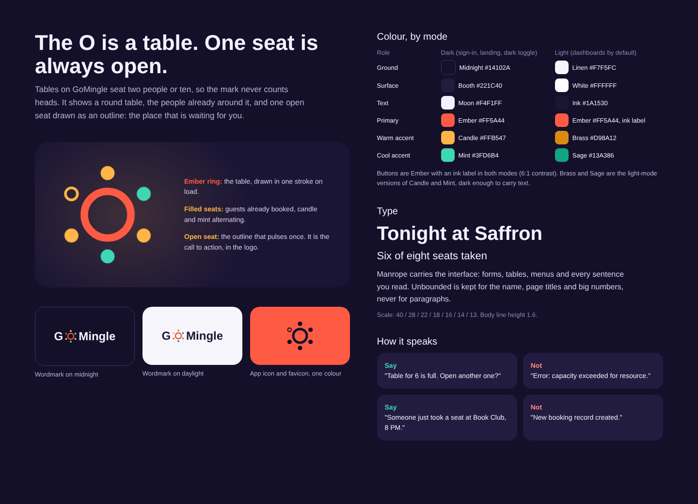
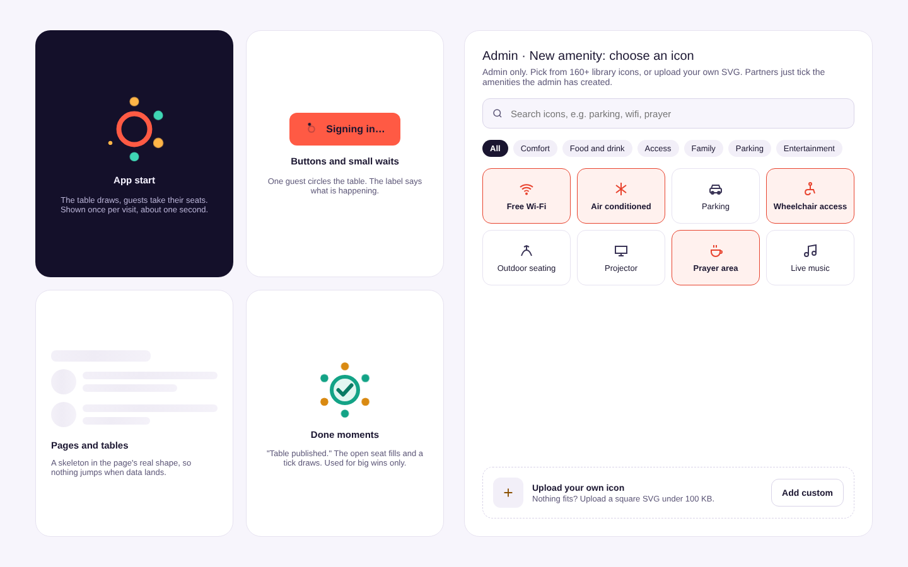
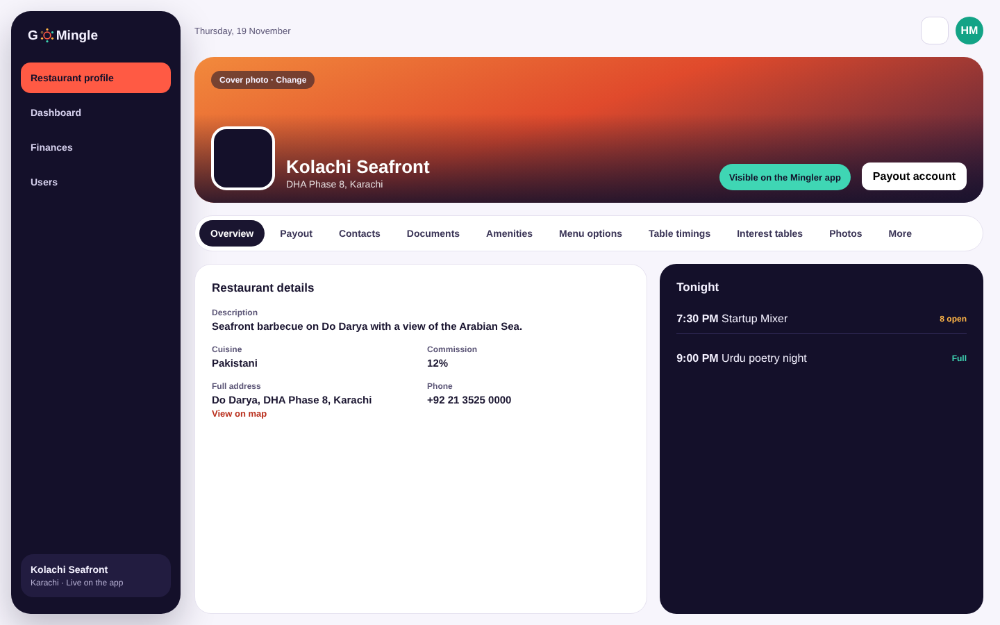
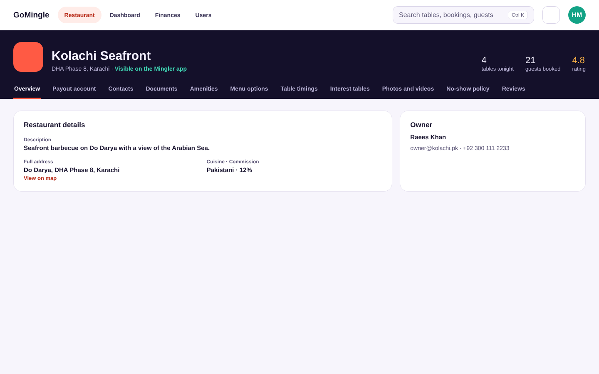
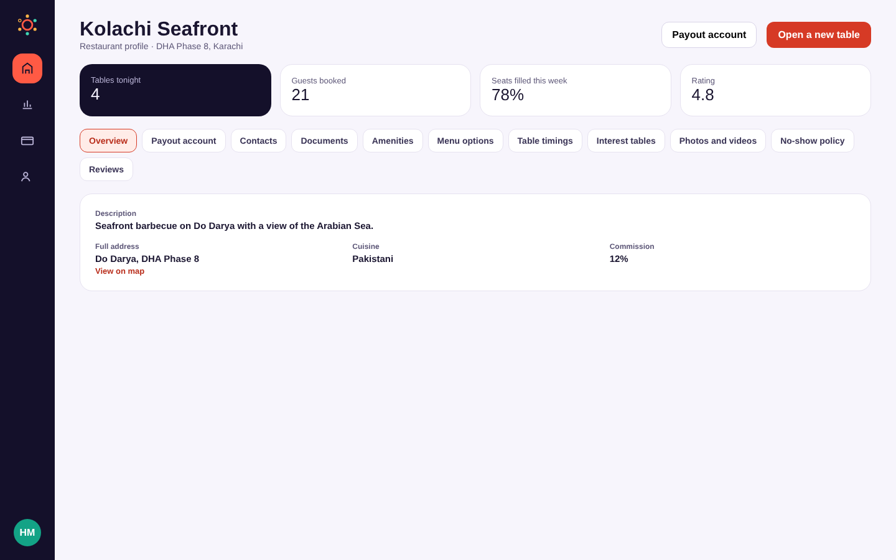
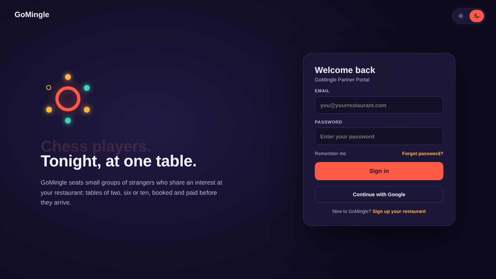
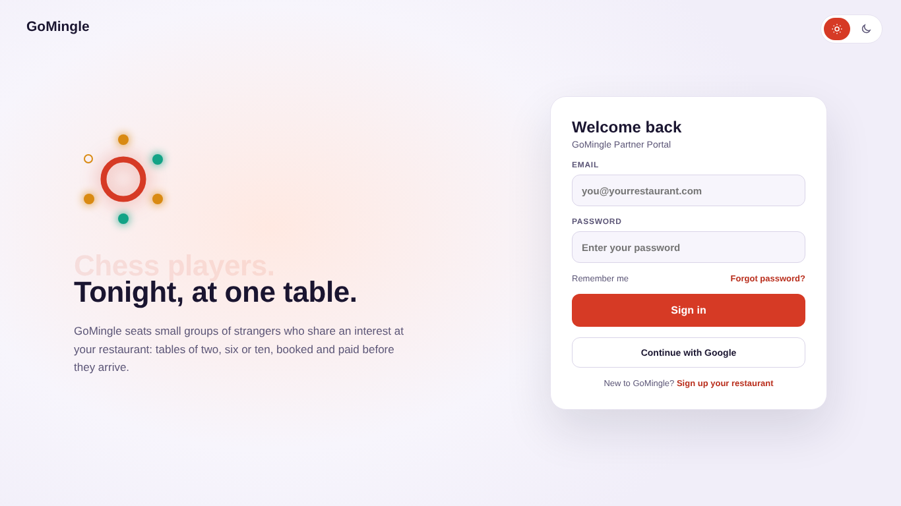
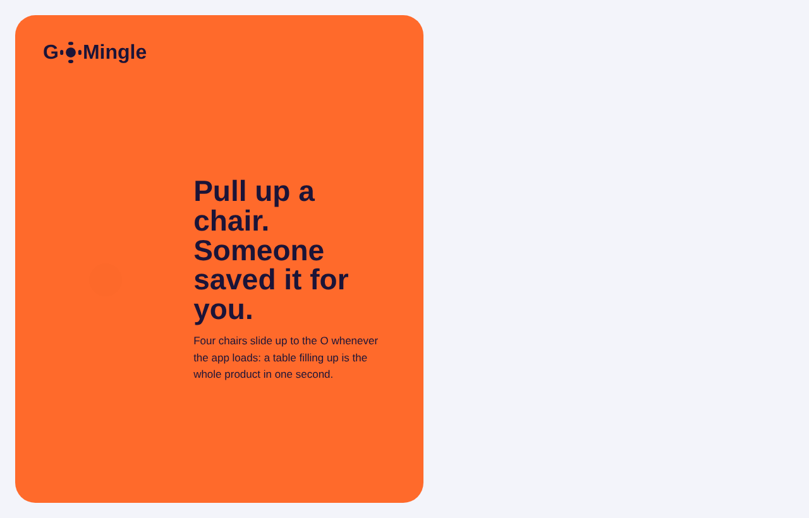
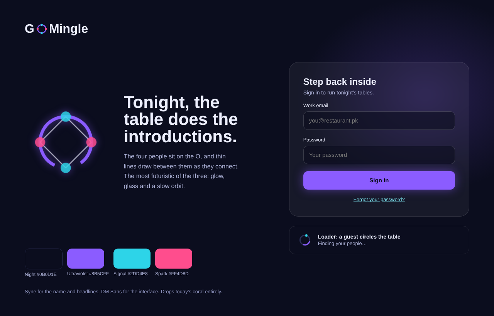

GoMingle Admin Panel: design boards
The Candlelit redesign, November 2026, exported from the design canvas as standalone pages. Open a card to see the full board, with its motion. The shipped screens in light, dark and phone layouts are in screens/.

Candlelit - Brand sheetBrand sheet: the "open seat" mark, colours for each mode, type scale and voice. Adopted. 1440×1040
Candlelit - Loaders and motionLoaders and motion: the table-filling loader, skeletons, reduced-motion fallbacks. Adopted. 1440×900
Inside option A - Floating dockInside the portal, option A: floating dock and cover banner. Chosen and shipped in v0.13.1. 1440×900
Inside option B - Top bar, hero header, Ctrl+KInside option B: top bar, hero header and Ctrl+K search. The Ctrl+K idea shipped in v0.13.8. 1440×900
Inside option C - Midnight railInside option C: midnight rail. Not chosen. 1440×900
Login option D - Side by side, one screen (dark, 1366×768)Sign-in option D, dark: text and form side by side, fits one screen at 1366×768. Chosen and shipped in v0.13.3. 1366×768
Login option D - Side by side, one screen (light, 1366×768)Sign-in option D, light. Shipped in v0.13.3. 1366×768 Login option D - Phone (light)Sign-in option D on a phone. Shipped in v0.13.3. 390×844
Login option D - Phone (light)Sign-in option D on a phone. Shipped in v0.13.3. 390×844

B - Daylight Social (parked)Direction B, Daylight Social. Explored, parked. 1280×820
C - Night Market (parked)Direction C, Night Market. Explored, parked. 1280×820